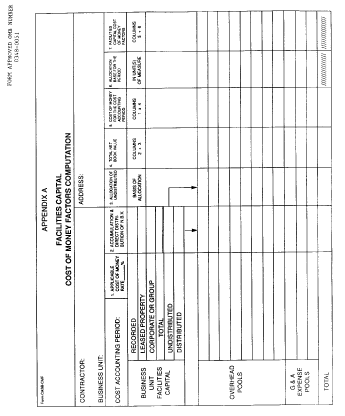

9904.414-63 Effective date.
This Standard is effective as of April 17, 1992.
Appendix A to 9904.414—Instructions for Form CASB CMF

Purpose
The purpose of this form is to (a) accumulate total facilities capital net book values allocated to each business unit for the contractor cost accounting period, and (b) convert those values to facilities capital cost of money factors applicable to each overhead or G&A expense allocation base employed within a business unit.
Basis
All data pertain to the cost accounting period for which the contractor prepares overhead and G&A expense allocations. The cost of money computations should be compatible with those allocation procedures. More specifically, facilities capital values used should be the same values that are used to generate depreciation or amortization that is allowed for Federal Government contract costing purposes; land which is integral to the regular operation of the business unit shall be included.
Applicable Cost of Money Rate (Col. 1)
Enter here the rate as computed in accordance with 9904.414-50(b).
Accumulation and Direct Distribution of Net Book Value (Col. 2)
Recorded, Leased Property, Corporate.
The net book value of facilities capital items in this column shall represent the average balances outstanding during the cost accounting period. This applies both to items that are subject to periodic depreciation or amortization and also to such items as land that are not subject to periodic write-offs. Unless there is a major fluctuation, it is adequate to ascertain the net book value of these assets at the beginning and end of each cost accounting period, and to compute an average of the beginning and ending values. “Recorded” facilities are the capital items owned by the contractor, carried on the books of the business unit, and used in its regular business activity. “Leased property” is the capitalized value of leases for which constructive costs of ownership are allowed in lieu of rental costs under Government procurement regulations, including right-of-use assets acquired in a finance lease, but excluding right-of-use assets acquired in an operating lease. Corporate or group facilities are the business unit's allocable share of corporate-owned and leased facilities. The net book value of items of facilities capital which are held or controlled by the home office shall be allocated to the business unit on a basis consistent with the home office expense allocation.
Distributed and Undistributed.
All facilities capital items that are identified in the contractor's records as solely applicable to an organizational unit corresponding to a specific overhead, G&A or other indirect cost pool which is used to allocate indirect costs to final cost objectives, are listed against the applicable pools and are classified as “distributed.” “Undistributed” is the remainder of the business unit's facilities capital. The sum of “distributed” and “undistributed” must also correspond to the amount shown on the “total” line.
Allocation of Distributed.
List in the narrative column all the overhead and G&A expense pools to which “distributed” facilities capital items have been allocated. Enter the corresponding amounts in (Col. 2). The sum of all the amounts shown against specific overhead and G&A expense pools must correspond to the amount shown in the “distributed” line.
Allocation of Undistributed (Col. 3)
Business unit “undistributed” facilities are allocated to overhead and the G&A expense pools on any reasonable basis that approximates the actual absorption of depreciation or amortization of such facilities. For instance, the basis of allocation of undistributed assets in each business unit between; e.g., engineering overhead pool and the manufacturing overhead pool, should be related to the manner in which the expenses generated by these assets are allocated between the two overhead pools. Detailed analysis of this allocation is not required where essentially the same results can be obtained by other means. Where the cost accounting system for purposes of Government contract costing uses more than one “charging rate” for allocating indirect costs accumulated in a single cost pool, one representative base may be substituted for the multiplicity of bases used in the allocation process. The net book value of service center facilities capital items appropriately allocated should be included in this column. The sum of the entries in Column 3 is equal to the entry in the undistributed line, Column 2.
A supporting work sheet of this allocation should be prepared if there is more than one service center or other similar “intermediate” cost objective involved in the reallocation process.
Alternative Allocation Process—As an alternative to the above allocation process all the undistributed assets for one or more service centers or similar intermediate cost objectives may be allocated to the G&A expense pool. Consequently, the cost of money for these undistributed assets will be distributed to the final cost objectives on the same basis that is used to allocate G&A expense. This procedure may be adopted for any cost accounting period only when the contracting parties agree (a) that the depreciation or amortization generated by these undistributed assets is immaterial, or (b) that the results of this alternative procedure are not likely to differ materially from those which would be obtained under the “regular” allocation process described previously.
Total Net Book Value (Col. 4)
The sum of Columns 2 and 3. The total of this column should agree with the business unit's total shown in Column 2.
Cost of Money for the Cost Accounting Period (Col. 5)
Multiply the amounts in Column 4 by the percentage rate in Column 1.
Allocation Base for the Period (Col. 6)
Show here the total units of measure used to allocate overhead and G&A expense pools (e.g., direct labor dollars, machine hours, total cost input, etc.). Include service centers that make charges to final cost objectives. Each base unit-of-measure must be compatible with the bases used for applying overhead in the Federal Government contract cost computation. The total base unit of measure used for allocation in this column refers to all work done in an organizational unit associated with the indirect cost pool and not to Government work alone.
Facilities Capital Cost of Money Factors (Col. 7)
The quotients of cost of money for the cost accounting period (Col. 5) separately divided by the corresponding overhead or G&A expense allocation bases (Col. 6). Carry each computation to five decimal places. This factor represents the cost of money applicable to facilities capital allocated to each unit of measure of the overhead or G&A expense allocation base.
[57 FR 14153, Apr. 17, 1992; 57 FR 34167, Aug. 3, 1992, as amended at 90 FR 43946, Sept. 11, 2025]